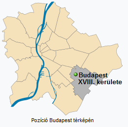
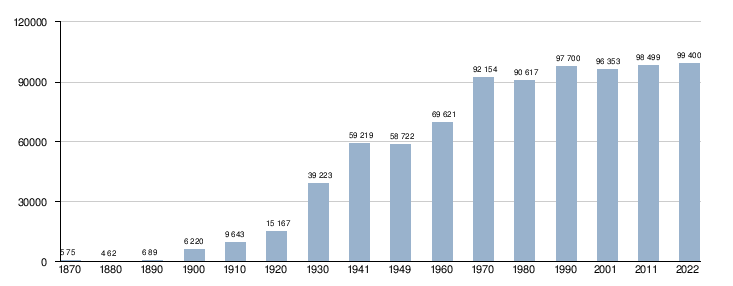
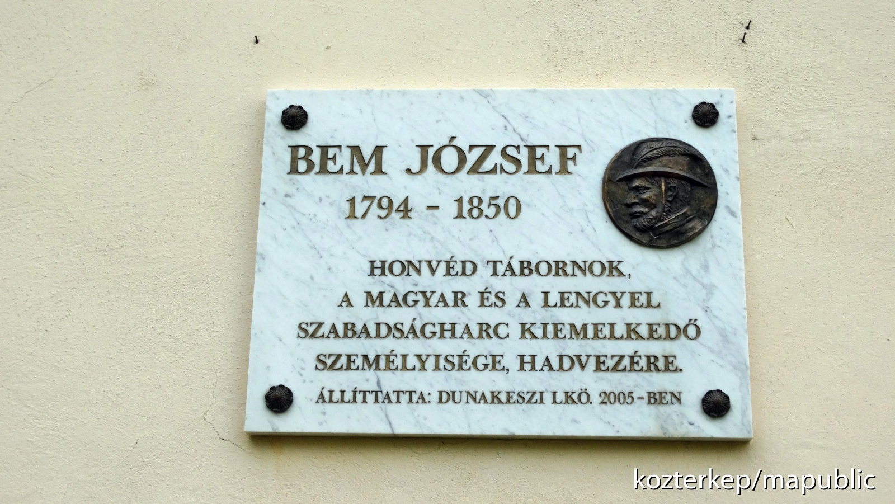
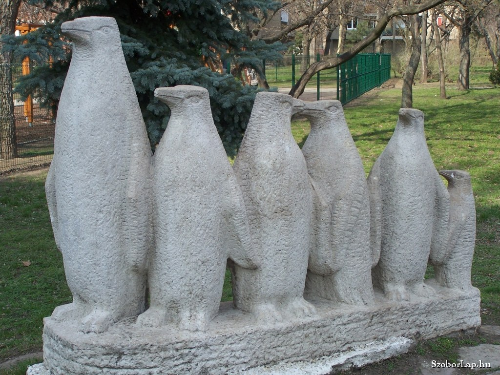

Története
Budapest XVIII. kerülete 1950. január 1-jén alakult két fő részből, Pestszentlőrincből (németül Sankt Lorenz) és Pestszentimréből (németül Sankt Emmerick). A kerület állandó lakosainak száma 95 257 fő (2001), népsűrűsége 2467,2 fő/km² (2001), a két kerületrész közti lakosság aránya: Pestszentlőrinc 79%, Pestszentimre 21%. A kerület főleg lakófunkciójú peremkerület, nagyrészt laza családiházas beépítéssel, több sűrűn beépített lakóteleppel és néhány ipari létesítménnyel. A kerület területén található a Liszt Ferenc repülőtér, a főváros nemzetközi repülőtere, valamint az Országos Meteorológiai Szolgálat Központi Előrejelzője és a Központi Légkörfizikai Intézet is. A XVIII. kerület legnagyobb kiterjedése észak–déli és kelet–nyugati irányban egyaránt 8-8 kilométer, területe 38,61 km².
Népesség
A XVIII. kerület lakónépessége 2022. október 1-jén 99 400 fő volt, ami Budapest össznépességének 5,9%-át tette ki. A 2011-es népszámlálás óta 901 fővel nőtt a kerület lakosság száma. Ebben az évben az egy km²-re jutó lakók száma, átlagosan 2575 ember volt. A XVIII. kerület népesség korösszetétele igen kedvezőtlen. 2022-ben a kerület lakónépességének a 14%-a 14 évnél fiatalabb, míg a 65 éven felülieké 21% volt. 2021-ben a férfiaknál 73, a nőknél 78,3 év volt a születéskor várható átlagos élettartam. A legmagasabb befejezett iskolai végzettség szerint az érettségi végzettséggel rendelkezők élnek a legtöbben a kerületben 34 208 fő, utánuk következő nagy csoport a diplomával rendelkezők 23 821 fővel. 2022-ben a 6 évnél idősebb népesség 88,2%-nál volt internet elérési lehetősége. A népszámlálás adatai alapján a kerület lakónépességének 10,8%-a, mintegy 10 743 személy vallotta magát valamely kisebbséghez tartozónak. A kisebbségek közül német, cigány és kínai nemzetiségűnek vallották magukat a legtöbben.
1900-ig gyakorlatilag alig lakta valaki a kerület területét. A területre tömegesen az új lakók az 1890-es évekbe kezdtek jobban beáramlani. A XVIII. kerület lakosságszáma egyenletesen növekedett, egészen 1920-ig. Az 1920-as évektől ugrásszerűen nőtt a lakosság száma 1970-es évekig. A folyamatos népességnövekedés csak a második világháború akasztotta meg. A háború következtében a kerület a lakosságának a 0,8%-át veszítette el. A 70-es évektől a lakosság száma gyakorlatilag stagnál, egy nagyon lassú növekedés figyelhető meg, ami a mai napig tart. A legtöbben 2022-ben éltek a kerületben 99 400 fő.
A 2022-es népszámlálási adatok szerint a magukat vallási közösséghez tartozónak valló XVIII. kerületiek túlnyomó többsége római katolikusnak tartja magát. Emellett jelentős egyház a kerületben, még a református.
Látnivalók
- Bem József emléktáblája a Bem József utca 2. alatt. A tábla Dąbrowa Tarnowska lengyel város helyhatóságának ajándéka, 2003. szeptember 13-án leplezték le. A magyarországi lengyelek fontos emléke, illetve emlékhelye. 
- Budapest Liszt Ferenc nemzetközi repülőtér, korábbi nevén Budapest Ferihegy nemzetközi repülőtér Magyarország legnagyobb reptere.
- Mária Szeplőtelen Szíve Templom, Pestszentlőrinci Főplébánia három tornyos, kereszttel együtt 36 méter magas. Az építés költsége a tervezett 100 millió korona helyett 1,4 milliárd korona volt.
- Új Tündérkert Étterem, ami régen Hofherr Albert királyi tanácsos villája volt, valószínűleg az 1890-es években épült.
- Cargo-domb. Az egyik legalkalmasabb hely, hogy a reptéren a fel- és leszálló gépeket lefotózzuk.
- Pestszenlőrinci vasútállomás volt a kerület első vasútállomása, ezt 1997 egy emléktábla hirdeti az állomáson.
- Szentséges Szűz Mária és Mihály arkangyal kopt ortodox templom, Magyarország első kopt temploma. A templomot 2011-ben III. Senuda, a kopt pápa szentelte fel az egyház püspökeivel együtt. A felszentelésen több száz hívő volt jelen Európa minden tájáról.
- Hargita téri '56-os emlékmű az 1956-os hősöknek az emlékére épült. A műalkotás egy hatalmas kockát ábrázol, ami több pici bazalt kockából épül fel, amik egykor a kerület utcáit borították. A pici kockákon egy-egy '56-os hős neve szerepel, valamint a kockákból kiolvasható az 1956-os évszám is.
- Az Energia – Villám szobor a kerületi hőerőműnél található, a portától kb. 20 méterre. A műalkotás egy lányt ábrázol aki jobb kezében az energia szimbólumaként villámokat tart. 
- Pingvinek szobra a Lakatos-lakótelepen található a Piros Iskola mellett. A szobor pingvin mamát és öt fiókáját ábrázolja.
- Artashes örmény király mellszobra az Artasat téren (korábbi nevén Uzsok tér) található. A XVIII. kerületi Örmény Nemzetiségi Önkormányzat kezdeményezésére jött létre a szobor, amit egy örmény szobrász készített Örményországból származó bazaltból. A szobor mellett található az Örmény-magyar katonai emlékmű is. 2017. március elsején a téren elhelyeztek még egy emlékművet, amin az Örményországban hadifogságban elhunyt magyar katonák neve olvasható. Továbbá a Kiss Ernő utcában az aradi vértanúk kivégzésének 150. évfordulója tiszteletére elhelyeztek egy emléktáblát Kiss Ernőről, aki egy örmény származású altábornagy volt.